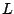
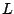

Next: About this document ...
Splittings for iterative solution of linear systems
Marko Huhtanen
Institute of Mathematics, Helsinki University of Technology
Box 1100, FIN-02015, Finland
marko.huhtanen@tkk.fi
Mikko Byckling
Consider iteratively solving a
linear system
 ,
with invertible
,
with invertible
 and
and
 , by splitting the matrix
, by splitting the matrix  as
as
 , where 
and
, where 
and  are both readily invertible. In such a case the
recently introduced residual minimizing Krylov subspace
method [1] can be executed, allowing, in a certain
sense, preconditioning simultaneously with and .
are both readily invertible. In such a case the
recently introduced residual minimizing Krylov subspace
method [1] can be executed, allowing, in a certain
sense, preconditioning simultaneously with and .
Splittings satisfying result either form the
structure of the problem, or are algebraic. Splittings of
Gauss-Seidel type belong to the latter category. In this
talk we discuss such splittings of .
[1] M. Huhtanen and O. Nevanlinna,
A minimum residual algorithm for
solving linear systems,
submitted manuscript available at
www.math.hut.fi/~mhuhtane/index.html.
Bruce Fast
2006-03-11